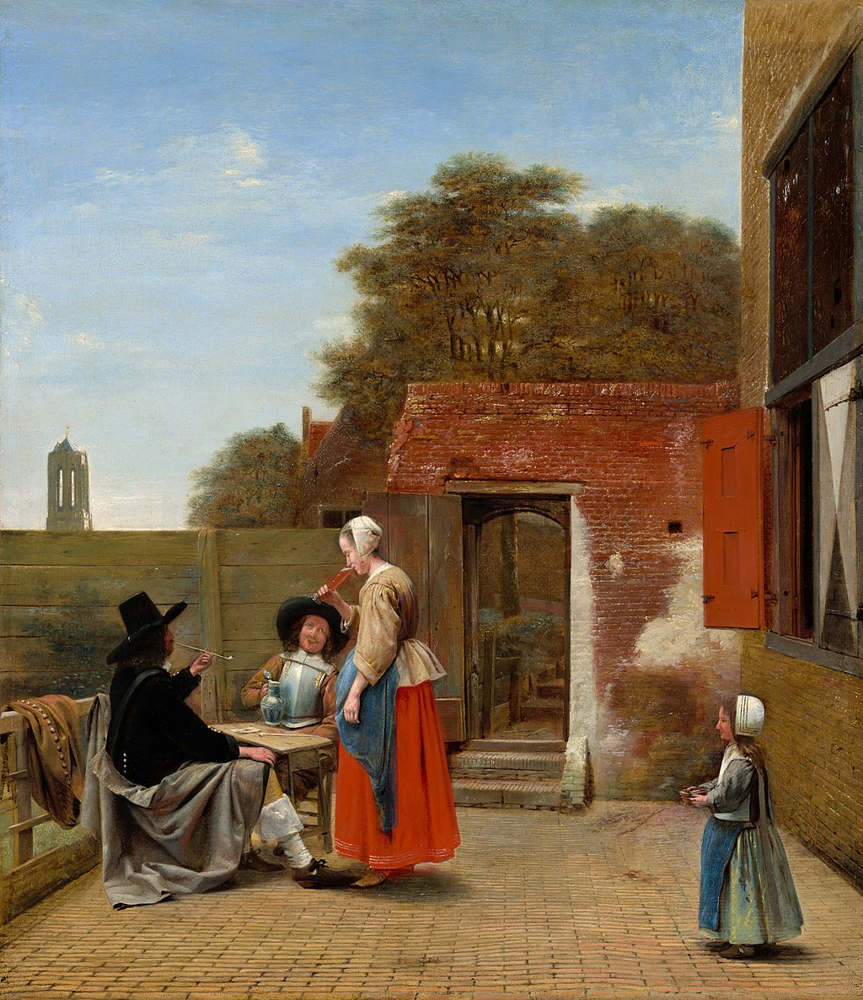

<head>
<meta charset="UTF-8" />
<meta name="keywords" content="drawing, painting" />
<meta name="description" content="drawings by Sunjy" />
<title>Sunjy</title>
<link rel="shortcut icon" type="image/x-icon" href="../../mImages/mCommon/favicon.ico" media="screen" />
<link rel="stylesheet" type="text/css" href="../../mCsses/mCommon/mCssA.css" />
<link rel="stylesheet" type="text/css" href="../../mCsses/mCommon/mCssB.css" />
<link rel="stylesheet" type="text/css" href="../../mCsses/mCommon/mCssC.css" />
<link rel="stylesheet" type="text/css" href="../../mCsses/mCommon/mCssD.css" />
<link rel="stylesheet" type="text/css" href="../../mCsses/mContent/mCssA.css" />
<link rel="stylesheet" type="text/css" href="../../mCsses/mContent/mCssB.css" />
<link rel="stylesheet" type="text/css" href="../../mCsses/mContent/mCssC.css" />
<link rel="stylesheet" type="text/css" href="../../mCsses/mContent/mCssD.css" />
</head>
<script type="text/javascript" src="../../mScripts/mContent/mContentAA.js" /></script>
<script type="text/javascript" src="../../mScripts/mContent/mContentAB.js" /></script>
<script type="text/javascript" src="../../mScripts/mContent/mContentAC.js" /></script>
<script type="text/javascript" src="../../mScripts/mContent/mContentAD.js" /></script>
<script type="text/javascript"></script> 
<script type="text/javascript">
document.write('<div class="mImgAbsolute"></div>');
/*
document.write('<p class="mFontSizeBColor" />From a white paper...</p>');
document.write('<table class="center"><tr><td>');
document.write('');
document.write('</td></tr></table>');
*/
</script>


<script type="text/javascript">
document.write('<p class="mFontSizeBColor" />A Dutch Courtyard</p>');
document.write('<p class="mFontSizeSColor" />“A Dutch Courtyard” by Pieter de Hooch depicts two men seated at a table in the courtyard and a standing woman. The soldier who is wearing a breastplate is setting down the pitcher he has used to fill the glass, now held by the woman.<br><br>The “pass-glass” the woman is drinking from was used in drinking games. Each participant had to drink down to the next line on the glass. If the drinker failed to reach the line level, the reveler would be required to drink down to the next ring.<br><br>Only when the drinker had drunk successfully to the required line would the glass be passed on to the next participant. The little girl carries a brazier of hot coals so that the two soldiers can light their long-stemmed, white clay pipes.<br><br>Women are going about their daily work or attending to visitors, such as the men seen in this painting, which was a frequent theme in De Hooch’s work. De Hooch worked in the city of Delft from about 1652 to 1660.<br><br>His work showed astute observation of the details of everyday life and exhibited a sophisticated treatment of light similar to those of Vermeer, who lived in Delft at the same time as de Hooch. <br><br>De Hooch painted everyday scenes in which his compositions emphasized the geometry of architectural elements. The doors, windows, and shutters, floor tiles, and bricks were all carefully detailed.<br></p>');
document.write('<table class="center" /><tr><td>');
document.write('<br>The “pass-glass” the woman is drinking from was used in drinking games. Each participant had to drink down to the next line on the glass. If the drinker failed to reach the line level, the reveler would be required to drink down to the next ring.<br><br>Only when the drinker had drunk successfully to the required line would the glass be passed on to the next participant. The little girl carries a brazier of hot coals so that the two soldiers can light their long-stemmed, white clay pipes.<br><br>Women are going about their daily work or attending to visitors, such as the men seen in this painting, which was a frequent theme in De Hooch’s work. De Hooch worked in the city of Delft from about 1652 to 1660.<br><br>His work showed astute observation of the details of everyday life and exhibited a sophisticated treatment of light similar to those of Vermeer, who lived in Delft at the same time as de Hooch. <br><br>De Hooch painted everyday scenes in which his compositions emphasized the geometry of architectural elements. The doors, windows, and shutters, floor tiles, and bricks were all carefully detailed.<br>" />');
document.write('</td></tr></table>');
</script>


